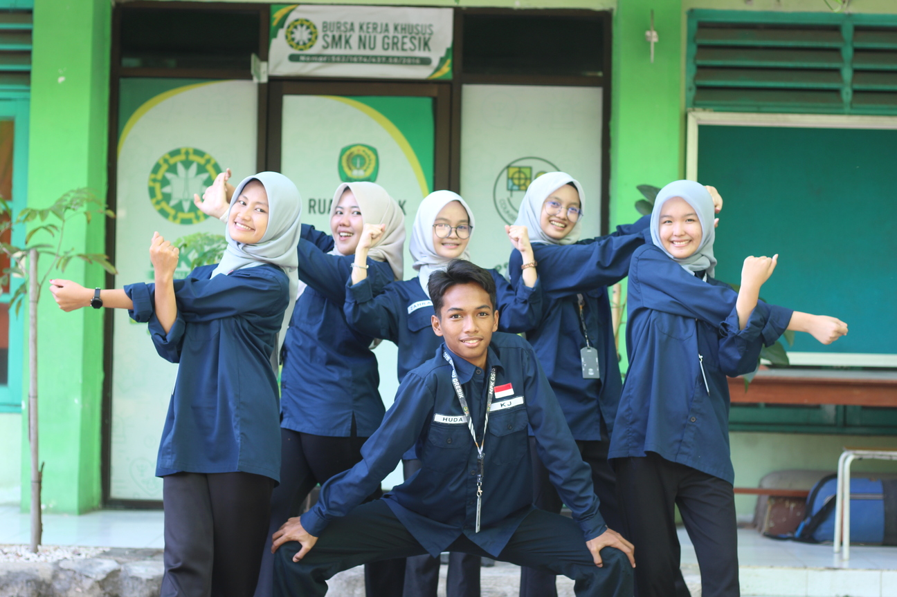

Zidni Mamluatul M., S.S., S.Pd, Gr.
Pembina Sekbid BK & KJ



Kebugaran Jasmani (KJ) adalah salah satu seksi bidang di dalam Organisasi Siswa Intra Sekolah (OSIS). KJ memiliki fungsi sebagai edukasi seputar kesehatan, misalnya memberi informasi seputar pencegahan narkotika, melaksanakan perilaku hidup bersih & sehat, melakukan peringatan hari gizi dan lain-lain. Tugas seksi bidang KJ yaitu membantu pihak Usaha Kesehatan Sekolah (UKS) untuk menjaga kebersihan sekolah, menjadi Palang Merah Remaja (PMR) pada saat upacara bendera, dan mengadakan kegiatan Penyuluhan Aksi Siaga Sehat.

PAKSIS adalah singkatan dari Penyuluhan AKsi SIaga Sehat. Kegiatan ini merupakan kegiatan penyuluhan terkait tentang cara untuk menangani keadaan darurat di lapangan. Tujuan dibentuk nya PAKSIS adalah untuk menambah wawasan bagi kita sebagai tim kesehatan terkait cara menangani keadaan keadaan darurat di lapangan, agar kita bisa tau cara penanganan yang baik dan benar untuk keadaan tersebut.

PMR merupakan salah satu program kerja sekbid KJ yang berkerja sama dengan sekbid BK, dimana program ini sudah terlatih untuk menjadi PMR yang kuat, cepat, dan cerdas, petugas PMR ini di laksanakan pada saat upacara sekolah berlangsung, tujuan PMR sendiri adalah menjaga dan melakukan penanganan ketikan ada yang sakit pada saat upacara bendera.
JJS (Jalan Jalan Sehat) merupakan salah satu program kerja unggulan yang wajib diikuti oleh seluruh siswa kelas 10 dan 11. Kegiatan ini diselenggarakan secara rutin setiap 1 bulan sekali, dengan penentuan jadwal pelaksanaan (minggu keberjalanannya) yang dikoordinasikan langsung oleh Ibu Aliyah. Salah satu tujuan JJS adalah Kebugaran Jasmani yaitu untuk menjaga kondisi fisik siswa agar tetap prima di tengah padatnya aktivitas akademik.